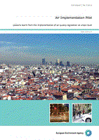

Air Implementation Pilot - Lessons learnt from the implementation of air quality legislation at urban level
Publication
Created 04 Jun 2013
Published 05 Jun 2013
EEA Report No 7/2013

Almost three quarters of Europeans live in cities. The air quality in our cities is therefore of significant importance to the health of Europeans. Considerable
progress has been made in the past twenty years in improving urban air quality, but issues remain. A number of different air pollutants such as nitrogen dioxide, particulate matter, and ozone remain above regulated levels, posing a threat to human health. This report describes a European pilot project to help identify and address the reasons underlying this 'gap' in implementation of air quality policy
in 12 European cities, and thereby draw lessons of wider relevance.
Published by
- EEA (European Environment Agency)
- Published: 05 Jun 2013
Content
- Air Implementation Pilot.pdf [8.2 MB]
Order information
Order a printed copy online (EU-Bookshop).
:
978-92-9213-399-3
:
TH-AL-13-008-EN-C
:
FREE
You can also obtain a copy from your nearest sales agent by providing the ordering info.
Related content
For references, please go to www.eea.europa.eu/soer or scan the QR code.
This briefing is part of the EEA's report The European Environment - State and Outlook 2015. The EEA is an official agency of the EU, tasked with providing information on Europe’s environment.
PDF generated on 04 Sep 2015, 11:09 AM

Document Actions
Share with others